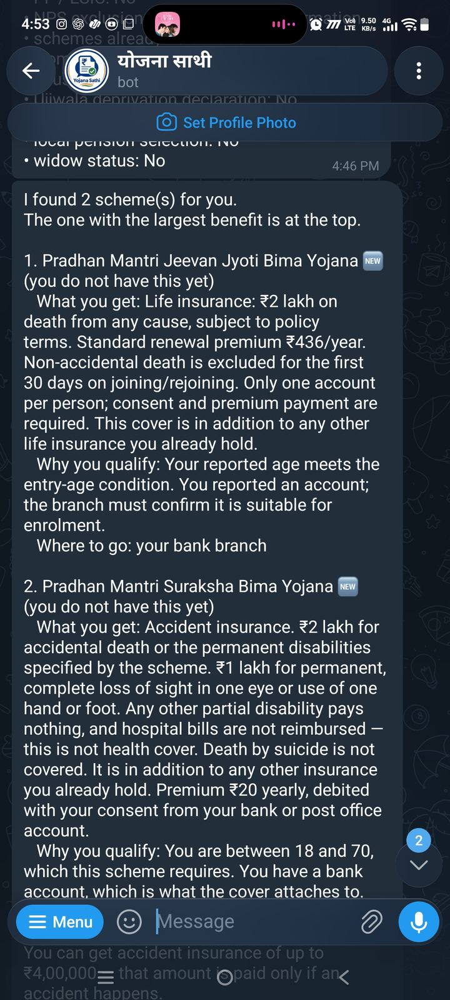
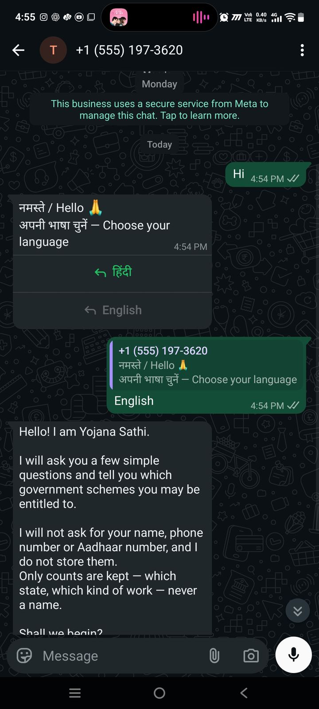
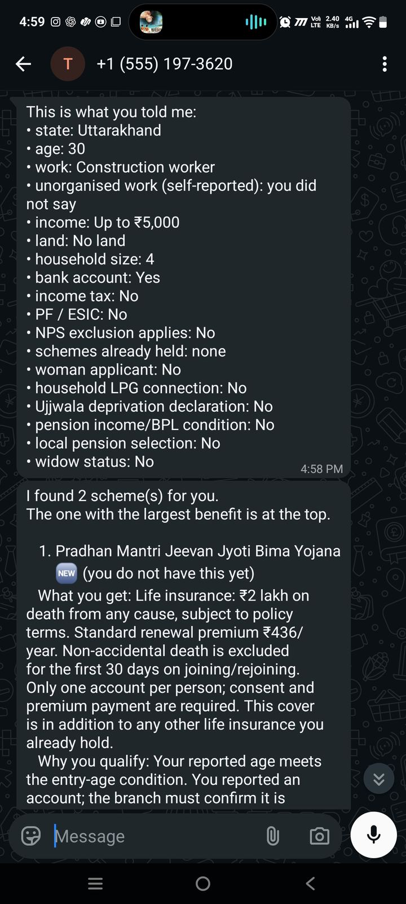
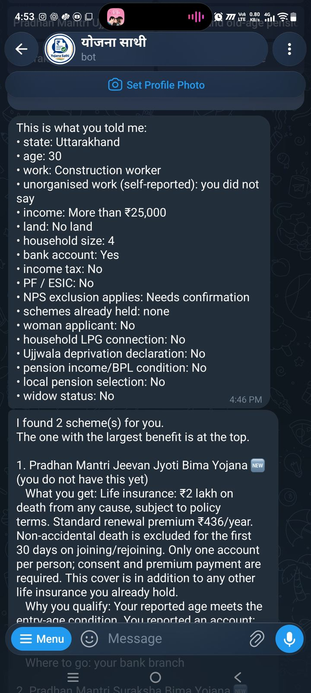
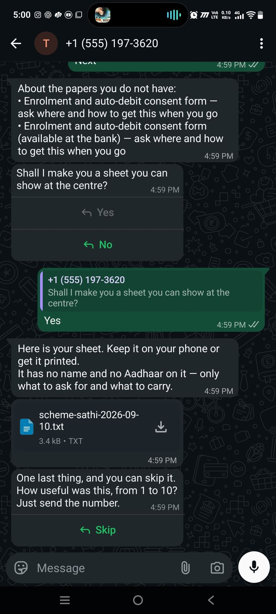
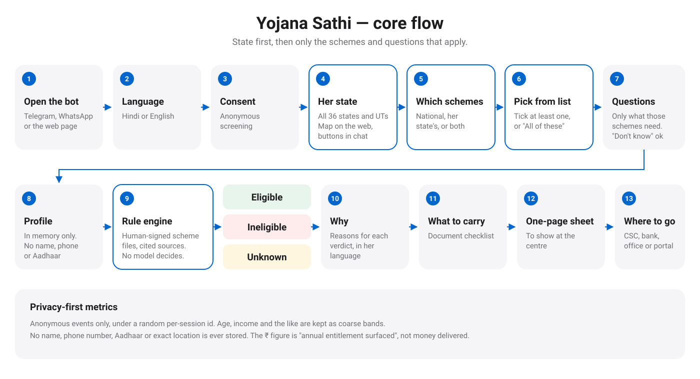
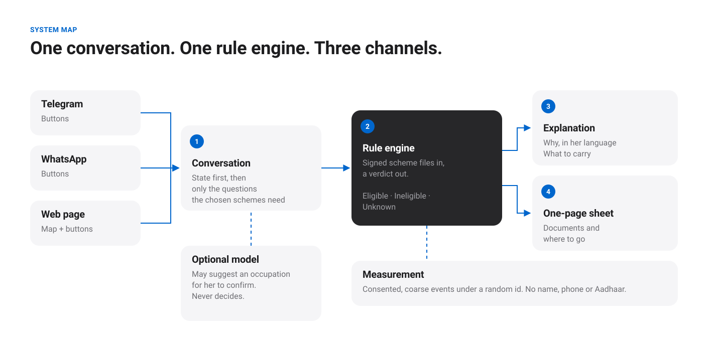
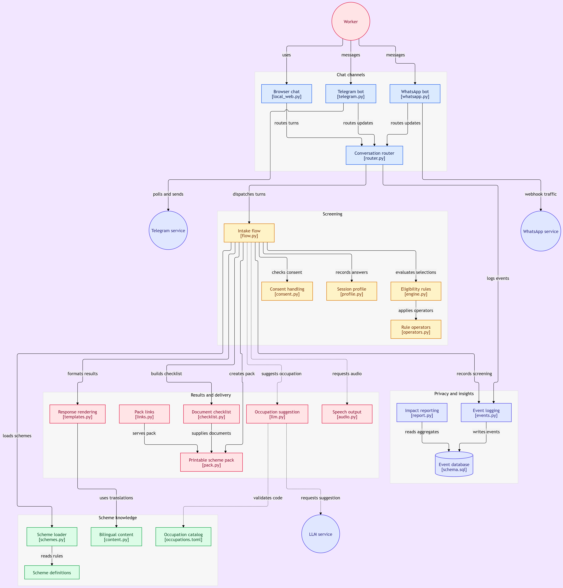

No field impact yet
No worker has used this outside maintainer testing. No claim about applications filed, benefits received, or people reached.
Code for a Billion 2026 · Livelihood
A Hindi and English chat that tells an unorganised worker which schemes fit, what to carry, and where to go — before a day's wage is spent at the wrong counter.

Schemes are published. What a worker can't tell from outside is whether one will actually accept them.
Registration is not receipt of a benefit. None of these figures measures this project.
Wages are the PLFS 2025 averages cited above. Trips and fare are yours to set; this is an illustration, not a measurement.
Introduction · 51 seconds
The problem, the flow, and why a model never decides.
Captions are in the video.
Explanation · 23 minutes
I vibe-coded the software, then had to learn how to trust it.
Captions are in the video.
Start with your state. Answer only what matters. Let the rules decide.
Your state — on a map or a list. Then national schemes, your state's, or both.
Only the questions those schemes need. “Don't know” is always allowed.
Plain rule files with cited sources. Same answers, same verdict — no model decides.
What you get, what it costs, what to carry, and where to go.
Most screeners have two outcomes and quietly default the third. If a question wasn't answered, or a rule hasn't been checked by a person, this one says so — and names what's missing.
Try the logic
Are you between 18 and 40?
Do you have a savings bank account?
Do you pay, or have you ever paid, income tax?
Atal Pension Yojana
Every condition is met. Next: what to carry, and the bank branch.
A simplified illustration of the three-way logic. The bot decides from its signed rule file, not from this page.
Screenshots from the running bot.




The handoff
The language model sits outside the decision path. It may suggest an occupation for the worker to confirm — nothing else.



A reviewed set of answers that hold up beats a broad directory of approximate ones.
Showing 20 of 20
₹36,000 per year from age 60
Common Service Centre
₹36,000 per year from age 60
Common Service Centre
From ₹12,000 per year at age 60
Bank branch
₹2,00,000 life cover
Bank branch
₹2,00,000 accident cover
Bank branch
₹5,00,000 hospital cover a year
Ayushman app or hospital
Toolkit up to ₹15,000, training stipend
Common Service Centre
In-kind LPG support
Online or an LPG distributor
Gateway — free account, RuPay card
Bank branch or Bank Mitra
Gateway — no payout of its own
e-Shram portal or a CSC
₹2,400 per year central share; ₹6,000 from age 80
Common Service Centre
₹3,600 per year central share; ₹6,000 from age 80
Common Service Centre
₹3,600 per year central share; ₹6,000 from age 80
Common Service Centre
₹18,000 per year
State portal
₹18,000 per year
State portal
₹18,000–₹30,000 per year by age
State pension portal
₹24,000 per year
State pension portal
₹24,000 per year
State pension portal
₹7,200 per year, widows 18–79
Panchayat or municipal office
₹18,000 per year, women 58+, men 65+
Panchayat, block or municipal office
National pension figures are the central share. A state pension replaces that figure; the two are never added. Punjab is two rule files, women and men.
Read from the bot's own event log, cached for a minute. Conversations and sheets — not people helped.
Updated — · still maintainer testing, not a field pilot
Naming what hasn't been shown yet is part of the product, not a footnote.
No worker has used this outside maintainer testing. No claim about applications filed, benefits received, or people reached.
Every rupee figure is what a scheme states it pays — not money anyone has been shown to have received through this tool.
An independent open-source project. Where a rule here conflicts with a department, the department is right.
Both flows are tested by the maintainer. Comprehension has not been checked with non-technical workers.
Telegram and the browser version are live. WhatsApp runs on Meta's test tier until business verification completes.
Built by Avinash Negi
“Not one threshold, rupee figure or age band in this project was authored by a model.”— from the blog post
I designed Yojana Sathi, checked and signed off every scheme it serves, and deployed and run it myself. An AI coding assistant wrote much of the code and the first drafts of the scheme files under my review; no rule reaches a worker until I have signed it.
Hiring? Résumé (PDF) · Résumé (Word) · avinashnegi.com
Spotted a wrong threshold, a stale amount, or a scheme worth adding? Corrections are the most useful thing anyone can send.